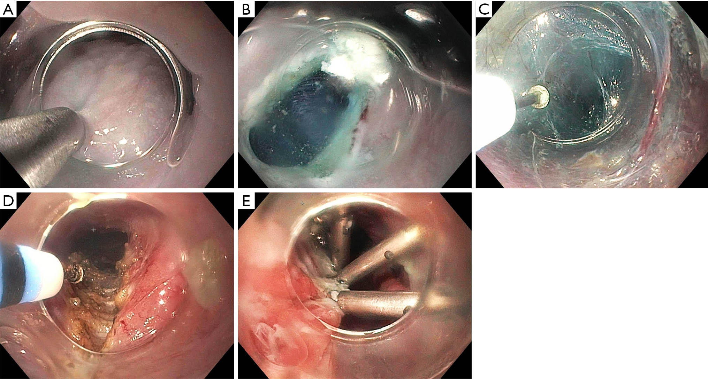

食道弛緩不能症（Esophageal Achalasia）— POEM vs Heller 手術比較
前言
經口內視鏡肌肉切開術（Peroral Endoscopic Myotomy, POEM）和腹腔鏡海勒肌肉切開術（Laparoscopic Heller Myotomy, LHM）是目前食道弛緩不能症最主要的兩種確定性治療方式。氣球擴張術（Pneumatic Dilation, PD）作為非手術選項，在特定患者群中仍有其角色。
本篇將依據現有臨床證據與國際指引（特別是 SAGES 2024 POEM Update），詳細比較這三種治療。
三大治療方式詳細比較
完整比較表
| 手術入路 |
經口（Transoral），黏膜下隧道 |
腹腔鏡，3~5 個 trocar 切口 |
經口內視鏡引導 |
| 麻醉方式 |
全身麻醉（General Anesthesia） |
全身麻醉 |
鎮靜（Conscious Sedation）或全身麻醉 |
| 體表傷口 |
無 |
3~5 個 0.5~1.2 cm 切口 |
無 |
| 手術時間 |
60~120 分鐘 |
90~180 分鐘 |
15~30 分鐘/次 |
| 切開方式 |
內環狀肌（可選前壁或後壁） |
外環狀肌 + 縱肌（前壁 Heller 切口） |
機械性撐裂括約肌纖維 |
| 切開長度可調性 |
高（可向食道近端延長至 > 10 cm） |
有限（標準 6~8 cm 食道端 + 2~3 cm 胃端） |
不適用 |
| 抗逆流措施 |
無（目前尚無標準化併行方案） |
同時加做部分胃底摺疊（通常 Dor 或 Toupet） |
不適用 |
| 住院天數 |
1~3 天 |
1~3 天 |
門診或 1 天 |
| 恢復正常飲食 |
1~2 週 |
2~4 週 |
1~2 天 |
| 恢復正常活動 |
3~7 天 |
2~4 週 |
1~2 天 |

圖：POEM（經口內視鏡）與 Heller Myotomy（腹腔鏡）的手術入路比較。圖片來源：Sanaei O, et al. Annals of Laparoscopic and Endoscopic Surgery. 2024. CC-BY-NC. 原文：AME
療效比較（按亞型）
| Type I（經典型） |
80~90% |
80~85% |
65~75% |
| Type II（加壓型） |
90~95% |
90~95% |
75~80% |
| Type III（痙攣型） |
85~95% |
60~70% |
40~50% |
| 整體 |
80~95% |
85~95% |
65~80% |
關鍵發現： Type III（痙攣型）弛緩不能症中，POEM 的療效明顯優於 LHM 和 PD。SAGES 2024 指引明確建議 POEM 為 Type III 的首選治療。
併發症比較
| 術後 GERD（胃食道逆流） |
20~50%（臨床症狀）；內視鏡食道炎 30~60% |
10~30%（有胃底摺疊） |
5~15% |
| 食道穿孔 |
< 0.5%（黏膜穿孔較常見，多術中處理） |
1~5% |
1~5% |
| 出血 |
1~2% |
1~2% |
< 1% |
| 氣腹/氣胸/皮下氣腫 |
5~15%（多自行吸收） |
< 1% |
極少 |
| 黏膜損傷 |
2~5%（術中可修補） |
< 1% |
不適用 |
| 感染 |
< 1% |
1~2% |
極少 |
| 死亡率 |
< 0.1% |
< 0.1% |
< 0.1% |
| 需再手術處理併發症 |
< 1% |
1~2% |
1~3%（穿孔時） |
術後 GERD 的深入比較
術後胃食道逆流（Gastroesophageal Reflux Disease, GERD）是比較 POEM 與 LHM 時最關鍵的差異：
| 主觀反流症狀 |
15~30% |
10~20% |
| 異常酸暴露（pH 監測） |
30~60% |
15~30% |
| 內視鏡食道炎（Los Angeles 分級） |
20~50%（多為 LA-A/B） |
10~20% |
| 嚴重食道炎（LA-C/D） |
2~5% |
< 2% |
| Barrett’s 食道（長期追蹤） |
數據有限，需長期觀察 |
罕見 |
| PPI 使用率 |
30~50% |
15~25% |
| GERD 相關的生活品質影響 |
多數用 PPI 可控制 |
較低 |
臨床意義： 雖然 POEM 術後 GERD 的發生率較高，但絕大多數屬於輕至中度，可用 PPI 有效控制。嚴重且難以控制的 GERD 較為少見。長期（> 10 年）是否會增加 Barrett’s 食道風險仍需追蹤數據。
長期療效與再介入
| 2 年症狀緩解率 |
85~93% |
85~93% |
60~75% |
| 5 年症狀緩解率 |
80~90% |
80~88% |
50~70% |
| 10 年症狀緩解率 |
數據累積中（初步良好） |
75~85% |
40~60% |
| 再治療率（5 年內） |
5~15% |
10~15% |
25~40% |
| 再治療選項 |
重複 POEM、PD、LHM |
PD、POEM |
重複 PD、POEM、LHM |
2025 長期追蹤統合分析
2025 年發表的系統性回顧與統合分析（9 研究，1,099 名患者，平均追蹤 34.2 個月）顯示：
- POEM vs LHM 長期治療成功率無顯著差異
- POEM 組 583 名患者的臨床成功率與 LHM 組相當
- 另一項大型世代研究（319 名患者，中位追蹤 73 個月）顯示 POEM 長期成功率達 92.6%
- 長期追蹤中，症狀性 GERD 發生率 28.9%，逆流性食道炎 35.3%
結論：POEM 的長期療效已獲更充分驗證，與 LHM 相當，但 GERD 管理仍為重要課題。
學習曲線（Learning Curve）
| 達到熟練所需例數 |
20~40 例 |
20~50 例 |
| 所需基礎技能 |
進階內視鏡技術（ESD 經驗有利） |
腹腔鏡手術基礎 |
| 培訓科別 |
消化內科 / 內視鏡介入 |
一般外科 / 消化外科 |
| 手術量與療效關聯 |
高手術量中心效果顯著較佳 |
高手術量中心效果較佳 |
| 併發症率與經驗關聯 |
初期併發症率較高，隨經驗下降 |
類似趨勢 |
SAGES 2024 POEM Update 關鍵建議
美國消化內視鏡外科醫師學會（Society of American Gastrointestinal and Endoscopic Surgeons, SAGES）於 2024 年發布的 POEM 更新指引中，提出以下重要建議：
核心建議
| POEM 可作為弛緩不能症的一線治療選項 |
中等（Moderate） |
有條件建議（Conditional） |
| POEM 優先於氣球擴張術（PD） |
低至中等 |
有條件建議 |
| Type III 弛緩不能症建議首選 POEM |
低 |
有條件建議 |
| POEM 術後應常規評估 GERD 並考慮 PPI |
低至中等 |
有條件建議 |
| POEM 應在有經驗的中心執行 |
專家共識 |
強烈建議（Strong） |
POEM vs LHM 的定位
- SAGES 2024 指出 POEM 與 LHM 的短中期療效相當
- 對於 Type III 弛緩不能症，POEM 因可延長肌肉切開範圍而被推薦為首選
- LHM + Fundoplication 在降低術後 GERD 方面有優勢
- 最終選擇應基於：患者亞型、術者經驗、患者偏好及 GERD 風險的權衡
POEM-F：POEM 合併胃底摺疊術（2025-2026 新進展）
POEM-F (Peroral Endoscopic Myotomy with Fundoplication) 是針對 POEM 術後逆流問題的創新解決方案，在同一次內視鏡手術中完成肌肉切開術與胃底摺疊術。
2026 統合分析結果（9 研究，202 名患者）
| 技術成功率 |
94.8% |
| 弛緩不能症臨床成功率 |
96.4% |
| GERD 緩解率 |
86.2% |
| 平均手術時間 |
115.7 分鐘（摺疊術約 55 分鐘） |
| 需再次介入比例 |
0%（6 個月追蹤） |
與標準 POEM 比較
| 術後 GERD（症狀） |
20-50% |
顯著降低 |
| 異常酸暴露 |
43-47% |
約 11% (1 年追蹤) |
| 食道炎 |
13-19% |
顯著降低 |
臨床意義：POEM-F 可能解決 POEM 最大的缺點——術後逆流，同時保留內視鏡微創的優勢。目前證據仍以小型研究為主，需要更大規模 RCT 驗證。此技術在少數專精中心施行。
特殊情境的治療選擇
初次治療失敗後的二線選擇
| PD 失敗 |
POEM 或 LHM |
兩者皆可 |
| POEM 失敗 |
重複 POEM、PD 或 LHM |
依失敗原因決定 |
| LHM 失敗 |
POEM 或 PD |
POEM 的優勢在於可從不同方向切開 |
| 多次治療失敗 |
評估食道切除術（Esophagectomy） |
最後手段 |
Heller 術後再治療中 POEM 的優勢
- LHM 通常從前壁（Anterior）進行肌肉切開
- POEM 可選擇從後壁（Posterior）進入，避開先前的手術區域
- 減少沾黏相關併發症的風險
- 對於 LHM 後復發的患者，POEM 是有效的救援治療選項
乙狀食道（Sigmoid Esophagus）的考量
- 嚴重的乙狀食道增加 POEM 和 LHM 的技術難度
- 需要有豐富經驗的術者
- 術前需仔細評估食道排空功能
- 部分患者可能最終需要食道切除術
術後追蹤建議
| 術後 1 天 |
鋇劑攝影確認無滲漏（依醫師判斷） |
| 術後 1~3 個月 |
症狀評估（Eckardt Score）、TBE |
| 術後 6 個月 |
症狀評估 |
| 術後 1 年 |
HRM、pH 監測（尤其 POEM 後）、上消化道內視鏡 |
| 術後 2~3 年 |
症狀評估、考慮 TBE |
| 長期（每 1~3 年） |
上消化道內視鏡（監測 GERD 相關黏膜變化） |
Eckardt Score（臨床症狀評分）
| 0 |
無 |
無 |
無 |
無 |
| 1 |
偶爾 |
偶爾 |
偶爾 |
< 5 kg |
| 2 |
每天 |
每天 |
每天 |
5~10 kg |
| 3 |
每餐 |
每餐 |
每餐 |
> 10 kg |
- 總分 0~12 分
- Eckardt Score ≤ 3 定義為治療成功
- 用於術前基線評估和術後追蹤比較
臨床決策摘要
flowchart TD
A[確診食道弛緩不能症<br/>確認亞型] --> B{適合手術/內視鏡治療?}
B -- 否 --> C[BTX 注射 / 藥物治療]
B -- 是 --> D{亞型?}
D --> E[Type I / Type II]
D --> F[Type III]
E --> G{患者因素考量}
G --> G1[擔心 GERD → LHM + Fundoplication]
G --> G2[偏好無傷口 → POEM]
G --> G3[希望非手術 → PD 分級擴張]
F --> H[POEM 為首選<br/>SAGES 2024 建議]
G1 --> I[與患者共享決策<br/>Shared Decision Making]
G2 --> I
G3 --> I
H --> I
I --> J[執行治療]
J --> K[術後追蹤<br/>Eckardt Score + 客觀檢查]
K --> L{Eckardt <= 3?}
L -- 是 --> M[治療成功<br/>定期追蹤]
L -- 否 --> N[評估二線治療]
style F fill:#FCE4EC
style H fill:#FCE4EC
style M fill:#E8F5E9
重點整理
| POEM vs LHM 療效 |
短中期療效相當，Type III 中 POEM 明顯優勢 |
| 最大差異 |
術後 GERD：POEM 較高，LHM+Fundoplication 較低 |
| Type III 首選 |
POEM（SAGES 2024 有條件建議） |
| GERD 管理 |
POEM 術後多數可用 PPI 控制 |
| 學習曲線 |
兩者皆需 20~50 例達到熟練 |
| 長期數據 |
LHM 有 > 10 年數據；POEM 仍在累積中 |
↑